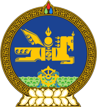
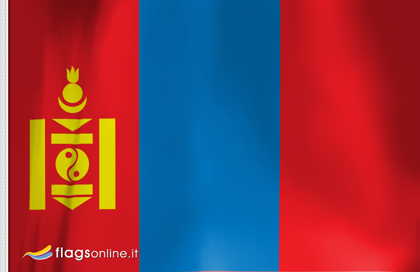

Idioma:Mongola |
Capital:Ulán Bator |
|  |
 |
Religión:Budismo(93%) |
Gastronomía:El plato más conocido en los
ambientes rurales es el cordero, servido a veces asado sin ningún otro ingrediente. En las ciudades y locales se sirve una masa que recubre una especie de albóndiga y que se denomina "buuz", suele cocinarse al vapor. Otros tipos de masas cocidas en agua ("Bansh"), o fritas en grasas de cordero son el "Khuushuur". Otros platos combinan carne con arroz o fideos en varios cocidos o sopas. |
Gentilicio: mongol-mongola |
Lugares turísticos:Lago Buirs,
Tsetserleg,Dalanzadgad |
Forma de gobierno: República unitaria y
semipresidencialista. |
Presidente actual:Tsakhiagiin
Elbegdorj 24 de mayo de 2009-en el cargo Partido Democrático Nacional |